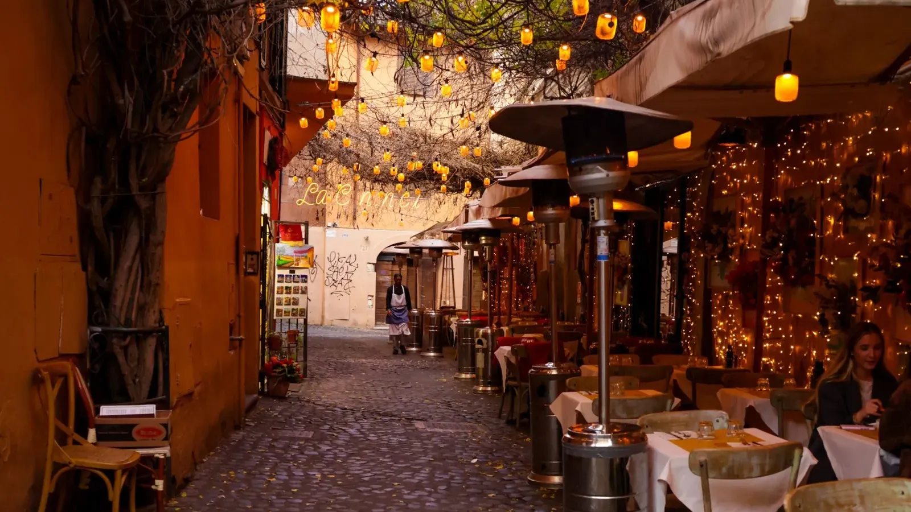

La risposta breve
Per una prima visita di 2–4 notti dormi nel Centro Storico (zona Pantheon, Piazza Navona e Campo de' Fiori) oppure a Monti, accanto al Colosseo: arrivi a piedi quasi ovunque e puoi tornare in hotel nel pomeriggio. Se ti interessano soprattutto le serate e il cibo, scegli Trastevere. Se vuoi tranquillità e un buon rapporto qualità-prezzo vicino al Vaticano, scegli Prati. Prendi Termini solo se arrivi presto o riparti tardi in treno, e solo nelle vie giuste.
Centro Storico: tutto a piedi
Il centro storico è la Roma delle cartoline: Pantheon, Piazza Navona, Fontana di Trevi, Campo de' Fiori, tutto in 15 minuti a piedi. È la scelta migliore per un soggiorno breve perché non perdi tempo nei trasporti. I difetti: gli hotel costano di più, le camere nei palazzi antichi sono spesso piccole e alcune vie sono rumorose fino a tardi. Nel cuore del centro non c'è la metro, ma non ti servirà.
Ideale per: chi viene la prima volta, coppie, 2–3 notti. Confronta gli hotel in centro.
Monti: il Colosseo sotto casa
Tra Via Nazionale, Via Cavour e il Colosseo, Monti è un paese dentro la città: vie coperte d'edera, piccoli wine bar, negozi vintage e trattorie piene di romani. Il Colosseo e i Fori sono a pochi minuti a piedi e le fermate Cavour e Colosseo (linea B) ti portano a Termini. Un po' più economico del centro e con un vero clima di quartiere.
Ideale per: chi vuole carattere senza stare nelle vie più affollate.
Trastevere: la più suggestiva
Oltre il Tevere, Trastevere è sampietrini, case color ocra, lanterne e cene all'aperto (la foto in alto è qui). È la zona più romantica in cui rientrare la sera ed è piena di ristoranti e locali. Da sapere: il fine settimana di notte è rumorosa, non c'è la metro (tram 8 e autobus) e il Colosseo è a 30–40 minuti a piedi. Per notti più tranquille guarda le vie verso Viale di Trastevere o in salita verso il Gianicolo.
Ideale per: chi ama mangiare bene, coppie, seconde visite. Vedi gli alloggi a Trastevere.
Prati e Vaticano: tranquilla e pratica
A nord del Vaticano, Prati è elegante, pianeggiante e calma: strade larghe, buoni negozi in Via Cola di Rienzo, ristoranti onesti e la metro A (Ottaviano, Lepanto). Sei a due passi da San Pietro e dai Musei Vaticani, quindi puoi entrare all'apertura, e a 20–25 minuti a piedi da Piazza Navona. Le camere di solito sono più grandi e convenienti che in centro.
Ideale per: famiglie, soggiorni lunghi, chi ha il sonno leggero. Se pensi di visitare il Vaticano la mattina presto, leggi la nostra guida ai biglietti per Colosseo e Vaticano.
Termini ed Esquilino: comoda, ma scegli bene
La zona intorno a Roma Termini ha più hotel e prezzi più bassi, oltre a entrambe le linee della metro, i treni per l'aeroporto e gli autobus. È perfetta per un treno di primo mattino o per il Leonardo Express per Fiumicino. Però le vie a sud della stazione (lato Esquilino e Piazza Vittorio) la sera possono risultare poco piacevoli. Preferisci il lato nord-ovest, verso Via Nazionale, Piazza della Repubblica e Castro Pretorio, e leggi sempre le recensioni recenti sulla via.
Ideale per: una notte prima della partenza, budget ridotti.
Altre zone da conoscere
- Piazza di Spagna / Via del Corso (Tridente): shopping di lusso e hotel eleganti, centrale e sicura, la zona più cara.
- Testaccio: il vero mercato romano e trattorie, pochi turisti, metro B (Piramide). Ottima per un secondo viaggio.
- San Giovanni: residenziale, più economica, metro A e C, a 15–20 minuti a piedi dal Colosseo.
- Da evitare come base: hotel vicino al Raccordo Anulare (GRA) o in aeroporto, se non hai l'auto: passeresti ore negli spostamenti.
Confronto rapido
| Zona | A piedi verso i monumenti | Prezzo | La sera | Metro |
|---|---|---|---|---|
| Centro Storico | Ottimo | €€€ | Vivace | No (a piedi) |
| Monti | Molto buono | €€–€€€ | Vivace, locale | Linea B |
| Trastevere | Buono | €€–€€€ | Molto vivace, rumorosa | No (tram 8) |
| Prati | Buono | €€ | Tranquilla | Linea A |
| Termini | Discreto | €–€€ | Variabile | A + B |
Consigli per prenotare
- La tassa di soggiorno si paga a persona e a notte, di solito direttamente in hotel e spesso in contanti: non sempre è inclusa nel prezzo online.
- Molti hotel sono ai piani alti di palazzi antichi: controlla che ci siano ascensore e aria condizionata (indispensabile da giugno a settembre).
- In centro l'auto è un problema: gran parte è ZTL. Leggi la nostra guida alle ZTL prima di entrare.
- Arrivi a Fiumicino? Guarda come andare dall'aeroporto a Roma e scegli un hotel comodo per il tuo arrivo.
- Prenota presto per Pasqua, la primavera e le feste di Natale, i periodi più cari.
Organizza il soggiorno a Roma
Alcuni link sono link affiliati: prenotare tramite essi non ti costa nulla in più e aiuta a mantenere 687 gratuito.
Roma, organizzata intorno a dove dormi.
In 687 Italy imposti il tuo hotel come base e ogni giornata viene organizzata intorno a quello, con i tempi a piedi, i treni, la mappa offline e il meteo. Se piove, NOW ricostruisce il resto della giornata.
Fonti
- Turismo Roma – sito ufficiale del turismo
- Roma Capitale – sito ufficiale del Comune
- ATAC – trasporto pubblico di Roma
- Musei Vaticani (ufficiale)
Verificate su questi siti ufficiali a novembre 2026. Prezzi e regole possono cambiare: controlla sempre prima di partire.